marcenaria em madeira de reuso para cães pequenos protótipo v2
CadeiraBeni
A caminha saiu do canto. Virou mobiliário.
madeira reaproveitadabambu substituíveltecidos — em breve
feita à mão, uma a uma
O incômodo
Quase todo móvel pet resolve o conforto do animal — e estraga a linguagem da casa.
A Beni nasceu dessa tensão, no PAS — Projeto Aplicado em Sustentabilidade: em vez de esconder uma caminha no canto, desenhar uma peça pequena de mobiliário — elevada, reparável, feita com madeira que já existia.
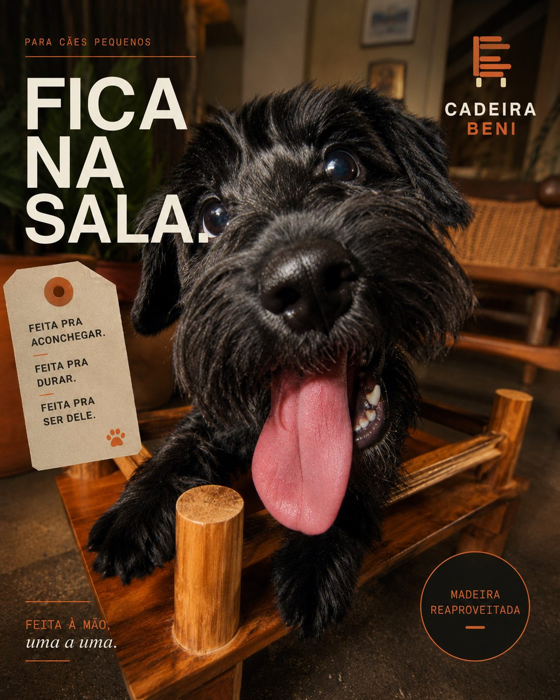
cadeira beniprotótipo v2
A peça
Uma peça de marcenaria para pets pequenos.
Plataforma elevada com presença de móvel. A madeira reaproveitada define cada exemplar; o bambu e o tecido fazem a manutenção ser parte do desenho — não um acidente.
EstruturaMadeira reaproveitadaTábuas que já existiam. Cada lote muda o veio, a cor e a peça — nenhuma Beni é igual à outra.
PernasPartes substituíveisQuatro estacas de bambu encaixadas. A parte que mais sofre é a mais fácil de trocar.
AssentoTecidos (em breve)A capa removível e lavável está em desenho — entra na próxima leva.
EscalaAltura para pet pequenoElevada o bastante para ventilar; baixa o bastante para subir sem esforço.
Madeira reaproveitadaPernas substituíveisTecidos em breveAltura pet pequenoFeita à mãoMadeira reaproveitadaPernas substituíveisTecidos em breveAltura pet pequenoFeita à mão
Detalhes
Por que madeira de reuso.
Sobras rígidas e móveis desmontados viram estrutura — material que normalmente acaba como descarte volumoso. O desenho aceita variação de veio, cor e medida: a madeira disponível define a peça, não o contrário.
AssentoTecidos — em brevecapa removível e lavável em desenho em breve
DimensõesSob medida por lotepadronização P/M em desenho a medir
PernasBambu substituível — 4 estacastroca sem desmontar o resto versão 2
FixaçãoEncaixe cavilhado, sem cola estruturalreparo por componente prototipado
AcabamentoVerniz + vinilresiste a unha, xixi e mordida prototipado
Processo · v1 → v2
O erro também é material.
A primeira versão falhou onde parecia mais bonita: nos pés. O que ela ensinou virou a regra da segunda.
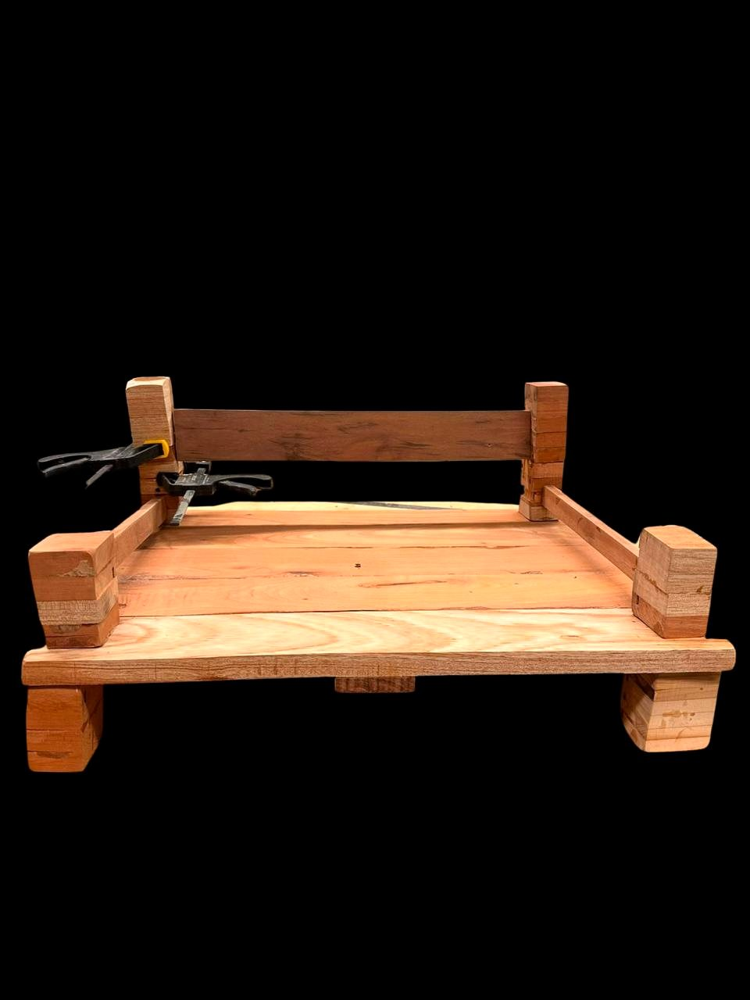
não fechouficou pesada!V1 · o que ela ensinou
Bonita, pesada, difícil de repetir.
materialdensidade variável entre tábuas — cada pé saía diferente
encaixemarchetaria exigia precisão que a madeira de reuso não dá
manutençãoestética colada: quebrou uma parte, perdeu a peça
mais reparávelV2 · o que mudou
Menos material. Partes separadas.
componentesestrutura e pernas viraram partes independentes
pernaestaca de bambu padronizada: sai uma, entra outra
pesomenos madeira na base — mais leve de mover e limpar embaixo
Diário de bancada
Sem render: serragem, cola e erro ao vivo, no laboratório.
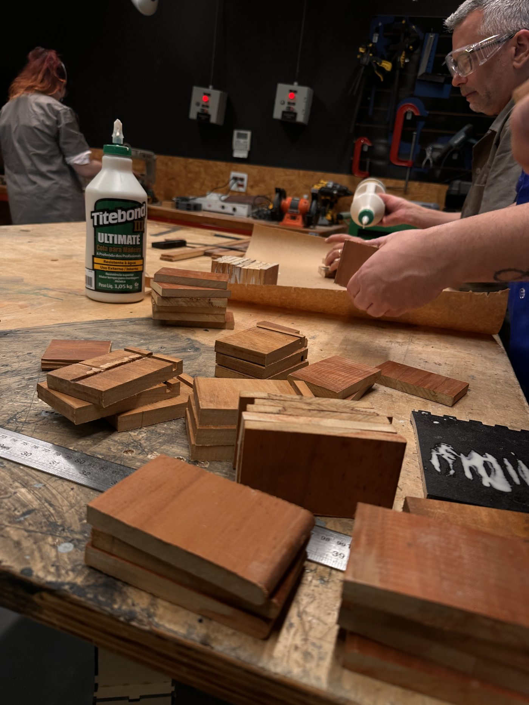
corte e triagem dos blocoscada bloco era um móvelpés laminados · cavilha marcada
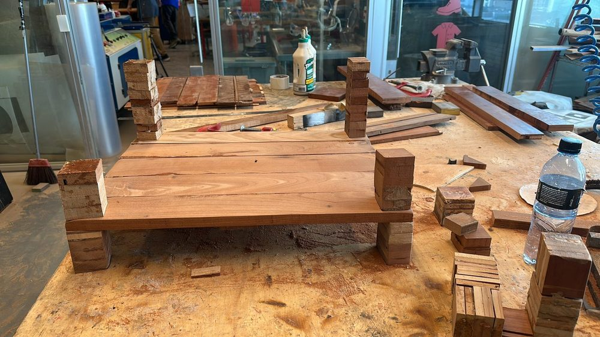
v1 nascendo na bancadaainda sem lixar!
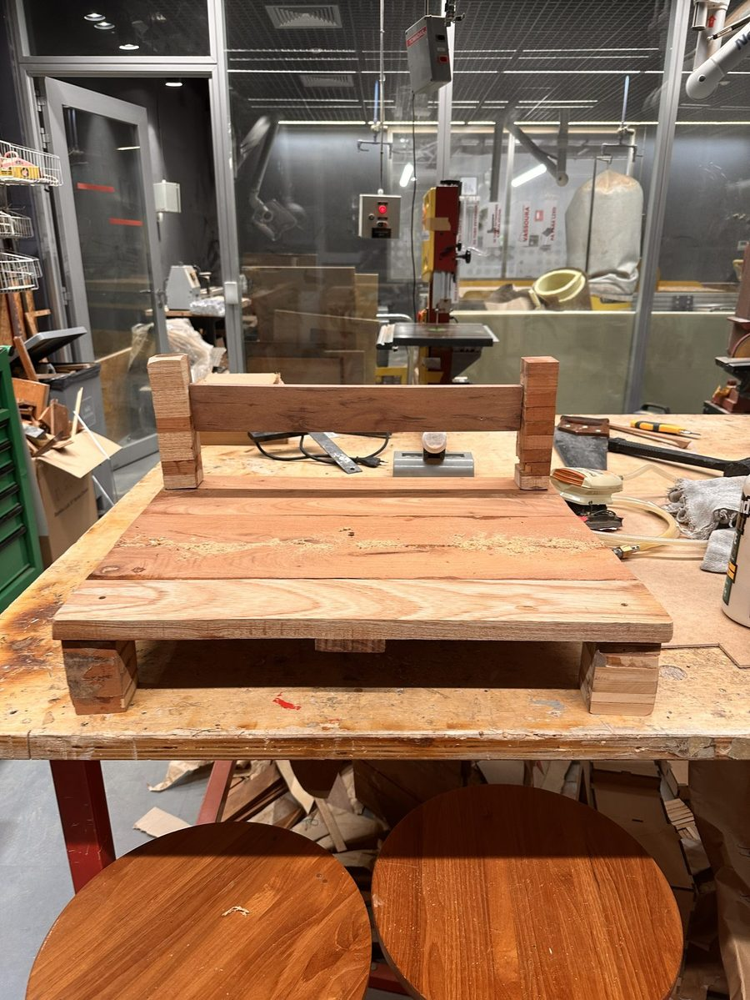
v1 crua · antes do polimento
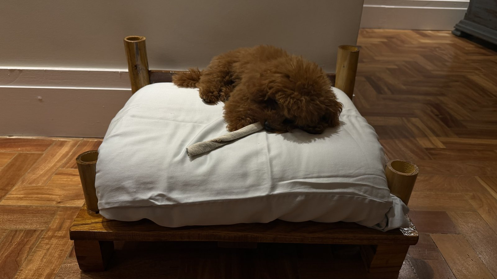
zzz
Teste na casa
Na sala, com cachorro.
Subiu sozinho, sem rampa nem convite.
Aguentou pata, peso e soneca comprida.
Ficou na sala. Não no canto.
Panning
A casa se mexe. A Beni fica.
mesma cena do teste · efeito de movimento real na imagem
Diário da Beni
Cachorro de verdade. Madeira de verdade.
Nada de banco de imagem: é o teste real, na casa real. A cadeira é o móvel; ele é o crítico.
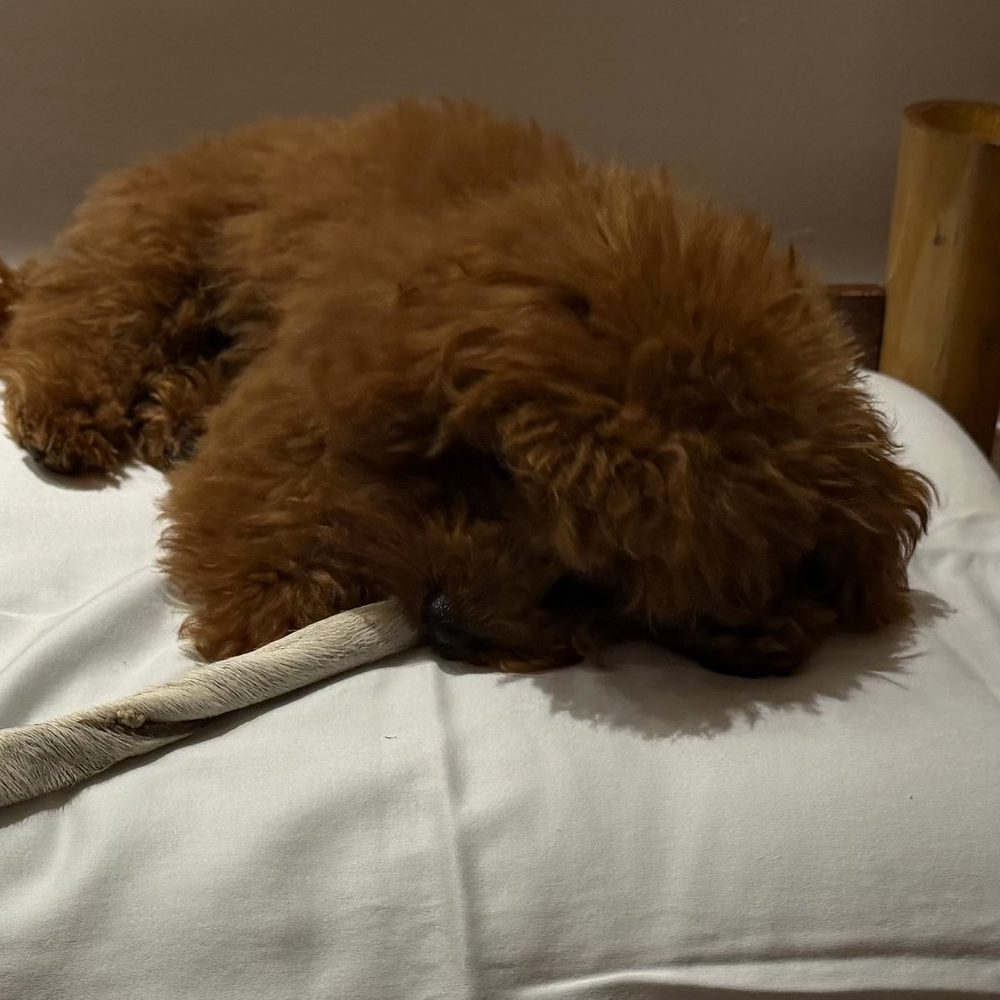
Soneca oficial.teste nº 1 · aprovado
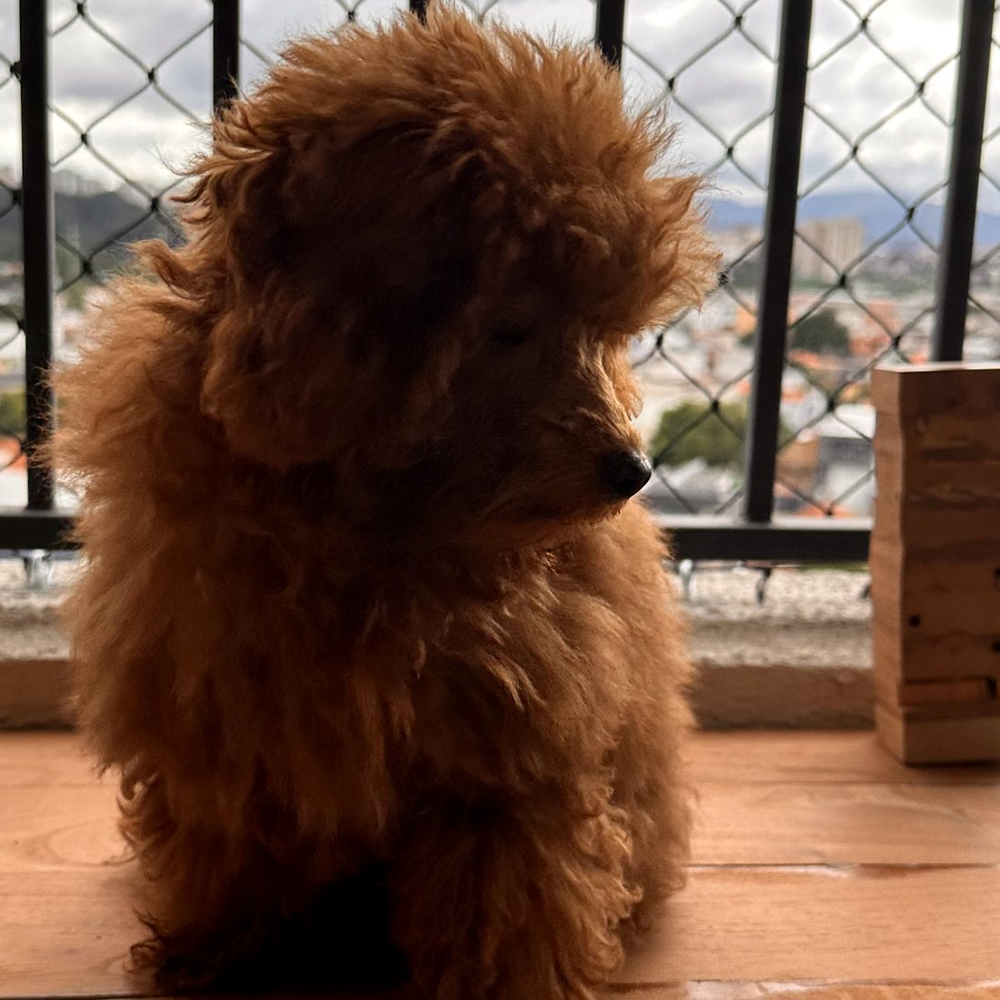
Dona do pedaço.sobe sozinho
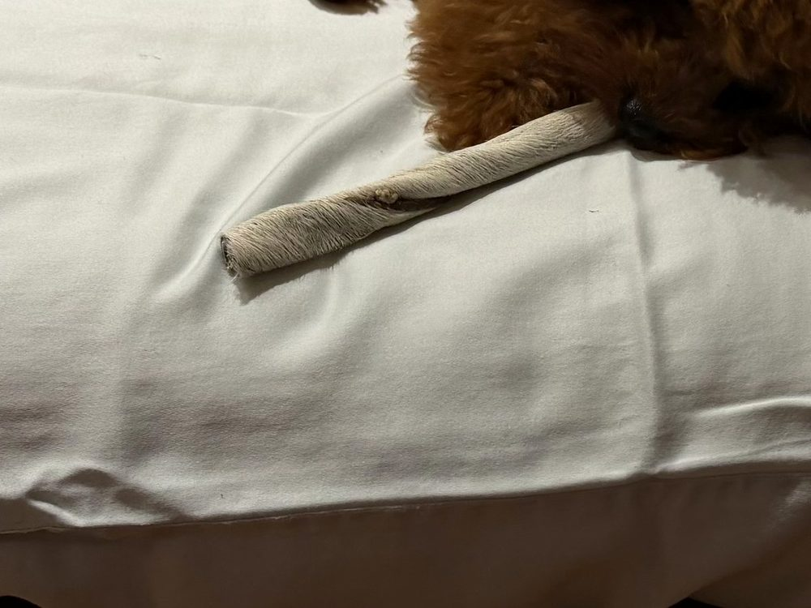
o brinquedo veio junto…mordida resistida ✓
fotos do teste real · protótipo v2 · nenhum cachorro de banco de imagem foi envolvido
Ensaio de sala
Ela não pede um canto. Pede a sala.
Ensaio de estilo: a Beni na luz das cinco da tarde e na sala escura — a mesma peça, duas casas, nenhum canto.
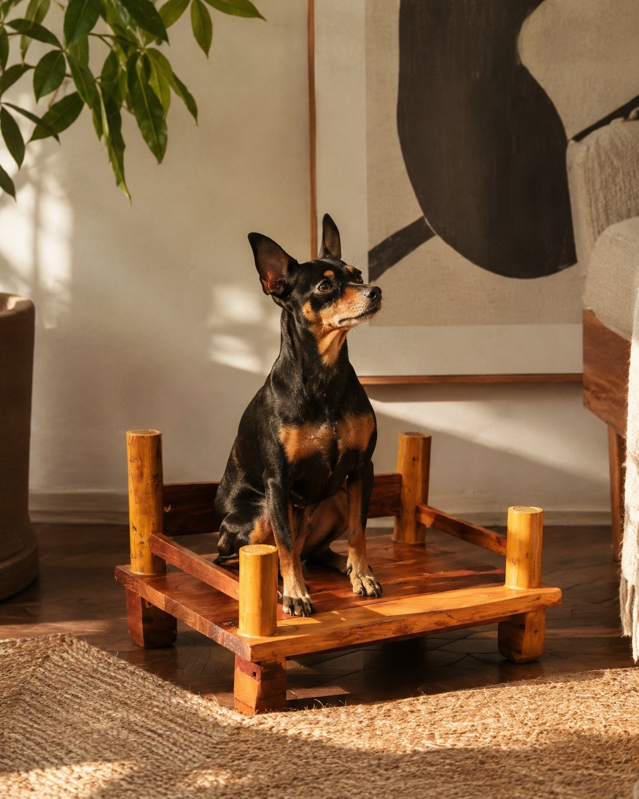
luz das cinco da tardeensaio 01 · sol baixo, juta e madeiracombina com sala escura tbensaio 02 · terracota, a cara da marca
A prova não é a cadeira. É a sala inteira fazendo sentido.
Da serragem à soneca
antes · v1 crua, sem polimento
→lixa · verniz · teste
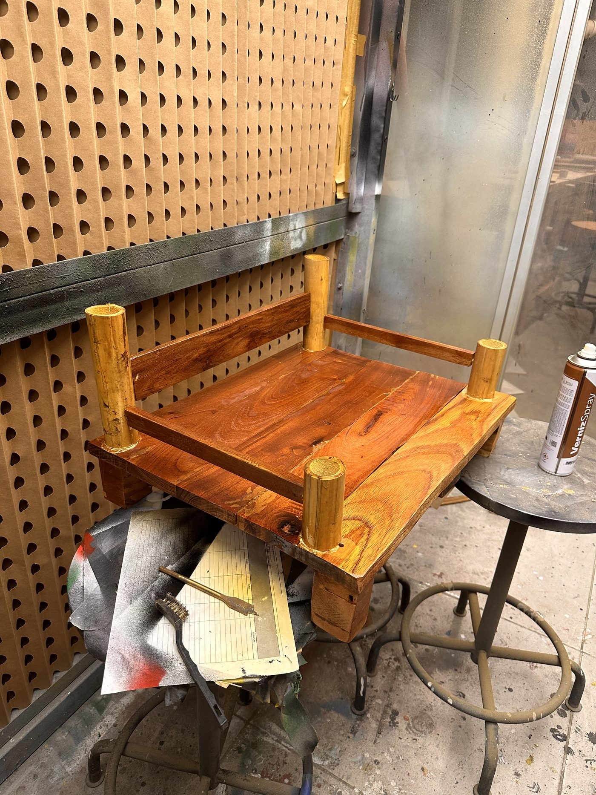
depois · verniz aplicado, cabine do lab
ensaio de estilo · a peça como ela quer morar
Fim de vida
Como ela desmonta.
Estrutura, tecido e pernas têm ciclos separados. O que desgasta primeiro sai primeiro — sem levar o resto junto.
Suja
↓
Lava
tecidos · em breve
Lasca
↓
Troca
protótipo
Marca
↓
Lixa
protótipo
Acaba
↓
Separa
evolução
Sobra
↓
Volta
evolução
reparo antes do descartefim de uso ≠ fim de vida
Suporte circular
Não jogue a Beni fora.
Da casa. Para o cachorro. De volta para o ciclo.
Madeira risca, marca, vive e muda. Se a sua peça chegar danificada, quebrar com o uso ou deixar de fazer sentido na sua casa, ela não precisa virar descarte comum — a gente orienta o reparo, a troca ou a devolução da madeira para reaproveitamento.
01Chegou danificada?
Envie fotos da peça, da embalagem e do pedido. A gente avalia e combina a troca ou a substituição da parte danificada.
02Precisa de reparo?
Riscos e marcas fazem parte da vida da madeira. Antes de descartar, fale com a gente: dá pra lixar, reforçar ou trocar só uma parte.
03Não quer mais?
Devolva a Beni pro ciclo. Ela pode ser restaurada, virar matéria-prima de novos produtos ou seguir para descarte correto.
04O que acontece depois?
Toda peça passa por triagem: reuso, reparo, reaproveitamento em protótipos — ou descarte responsável quando não der.
Porque quase todo dano em madeira maciça se resolve com trinta segundos de lixa fina, no sentido do veio. O manual impresso acompanha a peça — e o que a lixa não resolve, o suporte circular resolve.
Risco de unhaLixa.
Lixa fina — a que veio na caixa — sempre no sentido do veio. Pano seco depois. Se o risco passou do verniz, uma demão de verniz à base d'água fecha.
Xixi · águaSeca.
Pano seco na hora e sabão neutro se precisar. O verniz segura o líquido — só não deixe empoçar nem encharque a madeira.
Mordida na quinaArredonda.
Lixe a quina até suavizar. A marca que fica não é defeito: é pátina — a peça contando a história de quem mora nela.
Verniz opacoRenova.
Com os anos o brilho cansa. Lixa leve na peça inteira e uma demão de verniz incolor à base d'água. Vinte minutos, e parece outra.
Perna rachadaTroca.
Perna de bambu não se conserta — se substitui. O encaixe é seco de propósito: estaca sai, estaca entra. Peça avulsa por e-mail.
Estrutura soltouChama.
Tábua rachou, encaixe cedeu? Manda foto pro suporte. A gente orienta o reparo, troca a parte — ou a peça volta pro ciclo.
Nunca:encharcar a madeira · usar cola na estaca (o encaixe é seco de propósito) · jogar fora — devolve.
Viabilidade
Cinco provas para a cadeira existir.
Não bastava ser bonita. Cada linha abaixo é uma decisão de projeto, não uma promessa.
Cliente
Cabe na sala sem parecer caminha. Linguagem de móvel — madeira, proporção baixa, presença discreta.
Pet
Altura baixa para cão pequeno subir sozinho. Plataforma firme e ventilada, sem afundar.
Produção
Cortes retos e encaixes simples. Marcenaria de baixa complexidade reproduz — sem maquinário especial.
Ecossistema
Aproveita sobras rígidas que normalmente virariam descarte volumoso urbano.
Negócio
A peça dura; a reposição circula. Perna e tecido vendidos como componente, não como cadeira nova.
Próximo protótipo
O que ainda falta.
Capa de tecido removível e lavávelem breve
Padronizar medidas P e M a partir do lote de madeiraem desenho
Protocolo de sanitização da madeira reaproveitadahipótese
Testar com mais cães, casas e semanas de usoplanejado
Rota de retorno da madeira no fim de vida (take-back)hipótese
Encomenda
Próxima leva sob encomenda.
A Beni ainda é protótipo — e é feita em levas pequenas, na bancada. Cada peça muda conforme a madeira disponível: você escolhe o tamanho; o lote define veio e cor. Tecidos entram em breve.
Transformar resíduo de madeira em artefato me ensinou que o material manda. A marchetaria da V1 era o desenho que eu queria — a madeira disponível tinha outros planos: densidade diferente em cada tábua, encaixe que não repetia, peso que não fazia sentido.
O acerto foi parar de brigar com a variação e projetar com ela. Cada tábua diferente deixou de ser defeito e virou a identidade da peça. Ver a Beni de pé, com o cachorro dormindo em cima, foi entender circularidade na prática: não como conceito de slide, mas como decisão de bancada.
Luiza Britto · PAS — Projeto Aplicado em Sustentabilidade · Insper · 2026
 combina com sala escura tb
ensaio 02 · terracota, a cara da marca
combina com sala escura tb
ensaio 02 · terracota, a cara da marca